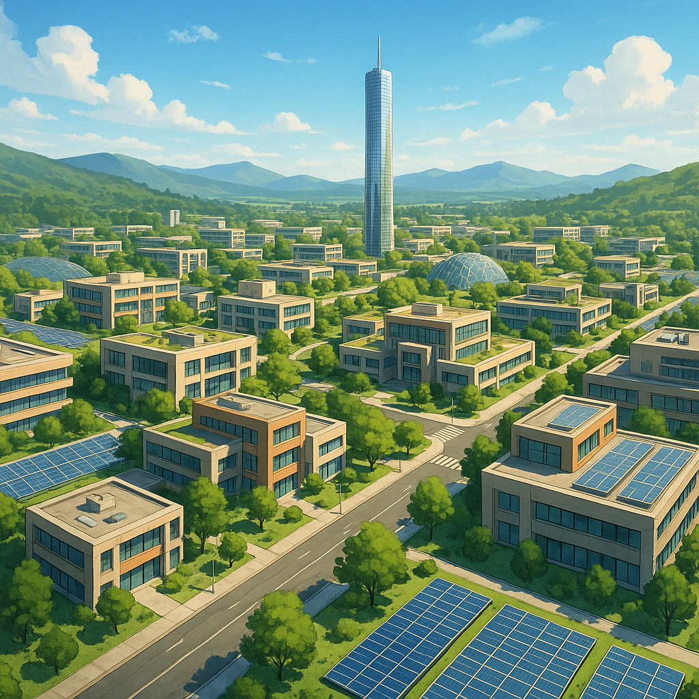

O Projeto Libertabra
Uma revolução na forma de viver: uma cidade privada, autossustentável e livre.
A Visão da Cidade Privada
Libertabra é mais do que uma cidade: é um sonho libertário que se torna realidade. Nossa missão é criar uma comunidade autossustentável onde a liberdade individual, o livre mercado e a sustentabilidade guiam cada decisão. Comprando o terreno, transformaremos um espaço em uma cidade autônoma, livre de interferências estatais, onde os moradores controlam sua infraestrutura, governança e economia.
Compra do Terreno
O primeiro passo é adquirir um terreno. Após a compra, o desenvolvimento incluirá:
- Planejamento Urbano Inovador: Infraestrutura com energia renovável (solar), agricultura orgânica e sistemas de água reciclada, projetados para harmonia com o meio ambiente.
- Governança Baseada em Liberdade: Contratos privados e arbitragem voluntária substituem imposições governamentais, promovendo autonomia.
- Economia Descentralizada: Adoção da criptomoeda BIG (na rede Solana) para transações, assegurando liberdade financeira e transparência.
Legalidade e Sustentabilidade
Todos os passos do projeto seguem as legislações vigentes de propriedade no Brasil, assegurando a legalidade da aquisição do terreno e dos direitos dos participantes. A propriedade será organizada por meio de uma empresa, onde os doadores se tornam sócios com participação proporcional. Isso garante segurança jurídica e transparência no processo. A construção da cidade será orientada por princípios de autossuficiência e colaboração, priorizando autonomia energética (com fontes renováveis), produção local de alimentos e uso responsável dos recursos naturais. Sustentabilidade não será apenas um pilar — será o alicerce de um novo modo de viver livre.